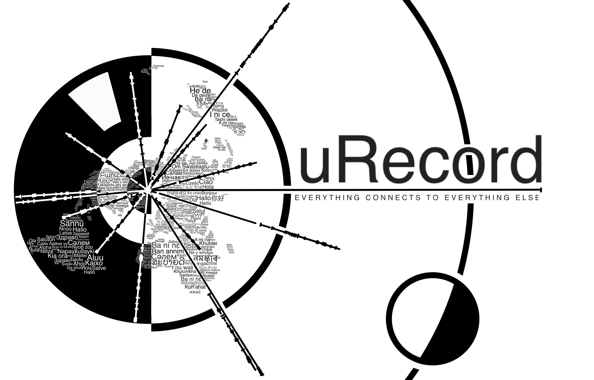

这里由 Project Hyproton 团队负责开发和制作。
我们的愿景是打造一个人类图书馆，以收录世界各地人类同胞的人生故事来构建一个去中心化、去政治宗教化的人类历史大纲，让相互仇视敌对的民族与国家能够了解到他们所谓的敌人也同样是有血有肉的人。
每个人都是独一无二的，每个人都拥有自己与众不同的人生，人类社会里每个人都很重要是世界必不可少的一环，不只有名人、伟大的科学家、卓越的政治家才能够被历史记住，每个人都拥有载入世界历史的权利，我们希望能够为世界和平，人类团结的地球千年梦作出一份贡献。